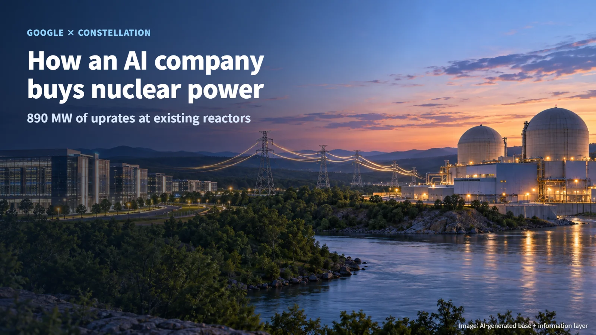
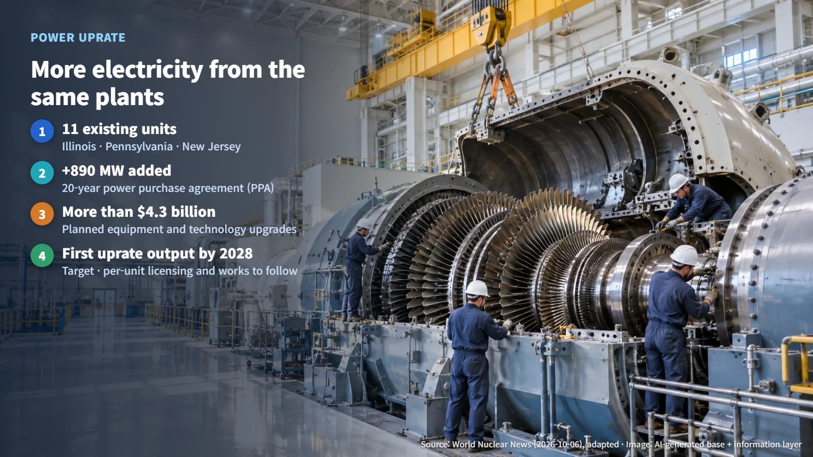
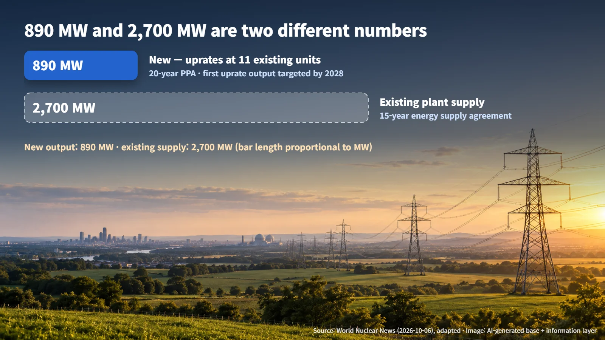

United States · Uprates & AI
How an AI Company Buys Nuclear Power: Reading Google's 890 MW Uprate Deal
Google and Constellation will add 890 MW to 11 existing nuclear units, and the separate 2,700 MW agreement covers power from plants already running.
Editorial responsibility: GlobalNuclearNews
When headlines say "Google is buying nuclear power," many readers wonder whether technology companies are now building their own reactors. The story also arrives with big figures attached, 890 MW here and 2,700 MW there, and it is easy to lose track of what is actually new. This announcement is about drawing more electricity out of nuclear plants that are already running. Let's go through the numbers one at a time and see what each of them represents.

New Output from Existing Reactors: The Uprate
On October 6, 2026, Google and the U.S. power company Constellation announced a 20-year power purchase agreement (PPA) that adds 890 MW at 11 nuclear units in Illinois, Pennsylvania and New Jersey. A power purchase agreement is a long-term contract in which an electricity user commits to buying power from a generator on agreed terms over many years.
The key word is "adds." The project raises the output of 11 existing units on their current sites, a type of work known as a power uprate. An uprate increases the permitted output and efficiency of existing equipment. A good comparison is a car that is already on the road: by upgrading the engine and key parts, the same car body delivers more power. At a nuclear plant, each such change also goes through its own review to confirm that it stays within safety requirements. Because the reactors, the sites and the grid connections are already in place, an uprate builds new output on top of infrastructure that is already working.

Constellation plans to invest more than $4.3 billion in equipment and technology upgrades, and it has set a target of delivering the first uprated output by 2028. The word "target" matters here. 2028 is a planned schedule, and the licensing and construction work for each individual unit still lies ahead.
890 MW and 2,700 MW: Two Different Numbers
The announcement contains a second large figure: a separate 2,700 MW, 15-year energy supply agreement. The two figures describe different things, so they are best read side by side rather than added together into a single total of new nuclear capacity.
The 2,700 MW agreement supports the revenue stability of existing generating assets in PJM, the organization that runs the power grid across part of the eastern United States. In other words, Google commits to buying electricity from plants that are already producing it over the long term, which helps those plants keep operating on a stable footing. The 890 MW, by contrast, is output that the uprates will add. The two agreements also run on different timelines: the uprate PPA covers 20 years, while the supply agreement covers 15 years.
Think of it this way: the 2,700 MW is like a long-term regular-customer deal with restaurants that are already running well, while the 890 MW is like reserving, in advance, the extra seats those restaurants will gain once they expand their kitchens. The new output is 890 MW; the 2,700 MW is existing supply. Keeping these two numbers apart is the first step to reading this story accurately.

What AI Will Do at the Plants
The agreement also includes a five-year technology collaboration. Google Cloud and Gemini Enterprise will be used to improve plant operations, equipment performance and grid management. Equipment performance refers to how well components such as pumps, turbines and generators run and hold up over time, while grid management concerns how a plant's output is delivered into the wider power system.
Safety-grade control is a separate area of plant engineering. It covers the systems directly involved in preventing accidents, such as safely shutting down and cooling the reactor, and it is held to the strictest standards in a nuclear plant. The announced collaboration covers operations, equipment performance and grid management, and any regulatory verification of these tools is still to come.
Based on the announced scope, AI's role is to help the people who run the plants improve equipment performance and grid management. Exactly where and how the tools will be applied, and how they will be verified, are the details to watch as the collaboration moves forward.
Milestones After the Signing
Signing a power purchase agreement and delivering the additional electricity are separate milestones. The contract is the starting point. Next, the companies need to decide how much output to add at each unit, apply to the U.S. Nuclear Regulatory Commission (NRC) and go through its review, and then carry out the physical equipment modifications. Whether the 2028 target for first delivery is met will become clear as these steps are completed.
Here is where each part of the Google–Constellation package stands today:
- Announced (October 6, 2026): a 20-year PPA for 890 MW of uprates at 11 units, a separate 2,700 MW, 15-year energy supply agreement, and a five-year technology collaboration
- Planned: more than $4.3 billion of equipment and technology investment by Constellation
- Target: first uprated output delivered by 2028
- Still ahead: the uprate scope for each unit, NRC applications and review, and the equipment modifications themselves
In the same article, World Nuclear News also described Oracle's October 2 agreement to subscribe to part of the output of the Point Beach nuclear plant. That is a separate transaction, and it is subject to approval by the Public Service Commission of Wisconsin. Here too, the announcement, the approval and the actual delivery are distinct stages, each confirmed on its own.
News of AI companies teaming up with nuclear plants is becoming familiar. As the figures get larger, two questions help bring each story into focus: "Is this new, or did it already exist?" and "Is this a plan, or is it finished?"
Revision r003 · October 26, 2026. Source links expanded and editorial attribution added.